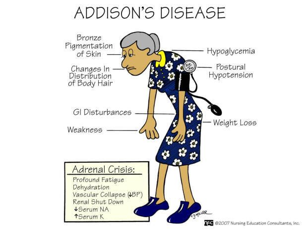

Addison’s disease.

SYMPTOMS:
- muscle weakness
-
fatigue and tiredness
-
darkening in skin color
-
weight loss or decreased appetite
-
a decrease in heart rate or blood pressure
-
low blood sugar levels
-
fainting spells
-
sores in the mouth
-
cravings for salt
-
nausea
-
vomiting
CAUSES
- There are two major classifications for Addison’s disease: primary adrenal insufficiency and secondary adrenal insufficiency. In order to treat the disease, your doctor will need to find out which type is responsible for your condition.
DIAGNOSIS
- Your doctor will ask you about your medical history and the symptoms you’ve been experiencing. They will do a physical examination, and they may order some lab tests to check your potassium and sodium levels.
-
Your doctor may also order imaging tests and measure your hormone levels.
TREATMENT
- Your treatment will depend on what’s causing your condition. Your doctor may prescribe medications that regulate your adrenal glands.
-
Following the treatment plan that your doctor creates for you is very important. Untreated Addison’s disease can lead to an Addisonian crisis.
-
If your condition has gone untreated for too long, and has progressed to a life-threatening condition called Addisonian crisis, your physician may prescribe medication to treat that first.
-
Addisonian crisis causes low blood pressure, high potassium in the blood, and low blood sugar levels.